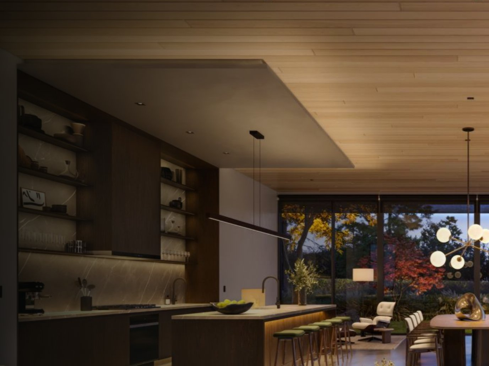
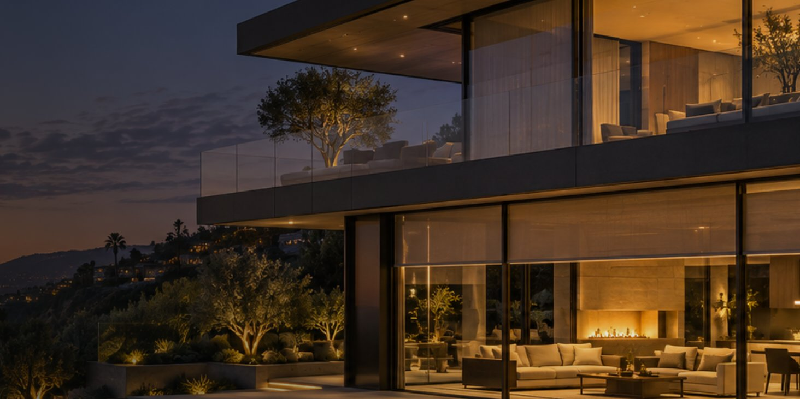
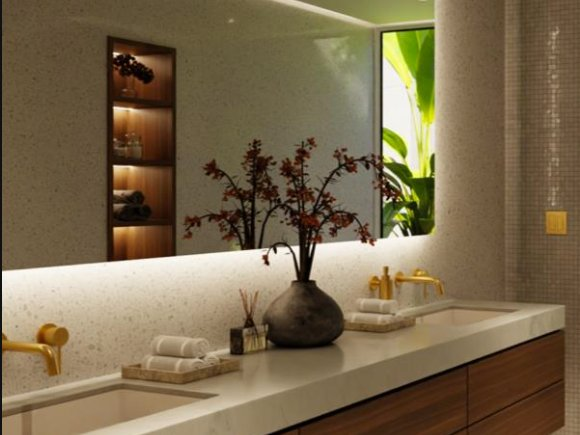
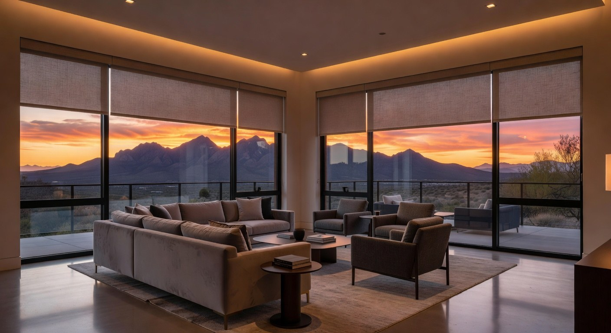

Lutron Ketra
Full-spectrum, tunable light, from candle-warm whites to vivid color. Ketra renders art, stone, and skin with remarkable fidelity, and can follow the sun through the day.

Residential Technology · Southern California
Intelligent lighting, motorized shades, and quiet technology for exceptional homes. Designed alongside your architect, built to disappear.
Entertain effortlessly.
Intelligent lighting
Our work centers on Lutron's intelligent lighting portfolio: fixtures and controls engineered as one system, so every room shifts naturally from morning to evening without anyone touching a switch.

Full-spectrum, tunable light, from candle-warm whites to vivid color. Ketra renders art, stone, and skin with remarkable fidelity, and can follow the sun through the day.

Natural white light across a wide range, from incandescent glow at 1,800K to midday sun at 5,500K. Downlights and tape light that sit almost invisibly in the architecture.

Motorized shades
Lutron shades move in near silence and work hand in hand with the lighting: easing down against afternoon glare, opening to the morning, protecting floors and furnishings without a second thought.
Living spaces
Everything beyond lighting and shades is kept deliberately simple.
A strong, reliable network is the foundation upon which everything is built. Seamless coverage, inside and out.
Premium OLED displays with an Apple TV remote. Nothing to learn, nothing to explain to guests. Simply reliable.
Sonance architectural speakers, including the invisible series, powered by Sonos. Sound without any sign of hardware.
Discreet cameras, door stations, and remote access. Clear visibility without visual clutter.
When a home calls for it, Josh.ai brings natural voice control to lighting, shades, and media. Always private.
How we work
Most of our projects come through client referrals and our relationships with design teams.
We start with you, the drawings, and the way you live, not with a product list.
Lighting, shades, and wiring are planned room by room with your architect, designer, and builder.
We install, program, and commission every detail, then show you how little there is to learn.
We stay with the home after move-in, so everything keeps working the way it did on day one.
The studio
Co-founder · System design & programming
Steve grew up in his family's AV business in Ohio, then spent a decade in private equity in New York after UNC Chapel Hill and a Wharton MBA. He left finance, bicycled across the country, and settled in Santa Monica. Today he designs and programs every Crestline system.
Co-founder · Project management & execution
A lifelong Angeleno and University of Arizona graduate, Justin worked in his family's real estate and gaming businesses before co-founding Crestline in 2017. He leads and oversees every installation, from the first wire to the final walkthrough.
Lutron · Ketra · Sonance · Theory Audio · Sonos · Crestron · Josh.ai
Recognition2021 CEDIA Awards for Best Lighting Solution, Best Technology Meets Design, and Best Integrated Home. 2021 CE Pro Home of the Year.
Based in Santa Monica, we work from Malibu to the South Bay and from Brentwood to Beverly Hills. Many of our clients have more than one home, so we also take on projects in Montecito, Santa Barbara, Palm Springs, and Big Bear, and as far away as Seattle, New York City, the Hamptons, and South Florida.